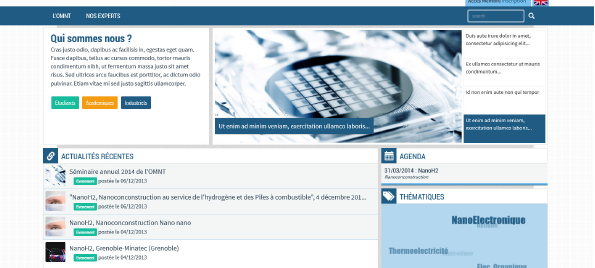

Portfolio
-
Virtual Digger Experience
Virtual Digger Experience est un site de découverte musicale de vinyles de Hip Hop, des années 80 et 90. Développé principalement en JQuery et avec la librairie webGL Three.js, il permet de parcourir des caisses de vinyles en 3D et d’écouter chacun des disques, directement dans le navigateur.
Nominé «Site Of The Day» par Design Licks et «Winner Of The Day» par CSS REEL, Virtual Digger Experience est une expérimentation sur les nouvelles possibilités de navigation qu’offrent les dernières technologies web.Mis en ligne en décembre 2013Javascript, Three.js, WebGL, JQuery, HTML5, CSS3
-
Digging Into Hip Hop
Digging Into Hip Hop est la version «classique» du site Virtual Digger Experience : basé sous Wordpress, il permet de consulter les vinyles sous la forme d’un blog plus traditionnel.
Les vinyles sont affichés sur la page d’accueil sous la forme d’une grille s’adaptant à la taille de l’écran. Le site comporte aussi une partie «administration» permettant de mettre à jour le contenu (comme ajouter, modifier ou supprimer des vinyles et des artistes) et gérer le site. -
JQuery Advanced News Ticker
JQANT est un plugin JQuery (librairie Javascript) permettant d’implémenter un «News Ticker» — un élément faisant défiler verticalement des actualités en boucle, comme l’on peut le voir sur certaines chaînes d’information — sur n’importe quel site web.
Comme tout plugin, il est doté de nombreuses options permettant de configurer son fonctionnement, des plus simples (nombres de lignes affichées sur l’écran, vitesse de défilement) aux plus complexes (boutons personnalisés, gestion des méthodes d’accès et callbacks lors de certains événements).
-
Polo Guillaume Landry
Développé en HTML5, CSS3 et Javascript, le site présente les différents produits de la nouvelle marque Polo Guillaume Landry. Il permet de précommander un polo en choisissant le coloris et ses dimensions.
Le plugin Javascript Fullpage.js et des animations CSS permettent de faire defiler verticalement le site tout en affichant diverses informations liées aux polos et à la marque.
-
Site Web de l'OMNT
L’OMNT (Observatoire des Micro et NanoTechnologies) est un organisme mixte du CNRS (Centre National de la Recherche Scientifique) et du CEA (Commissariat à l’Energie Atomique), de veille scientifique. La conception et la réalisation de leur nouveau site web est la mission de mon alternance lors de ma licence professionnelle (2013/2014).
Ce site est un site «vitrine» présentant les activités de l’organisme, leurs publications récentes et les experts associés à l’organisme. Il permet aussi de se renseigner sur les futurs événements proposés par l’OMNT et ses partenaires.Bientôt en lignePHP, Javascript, HTML5, CSS3